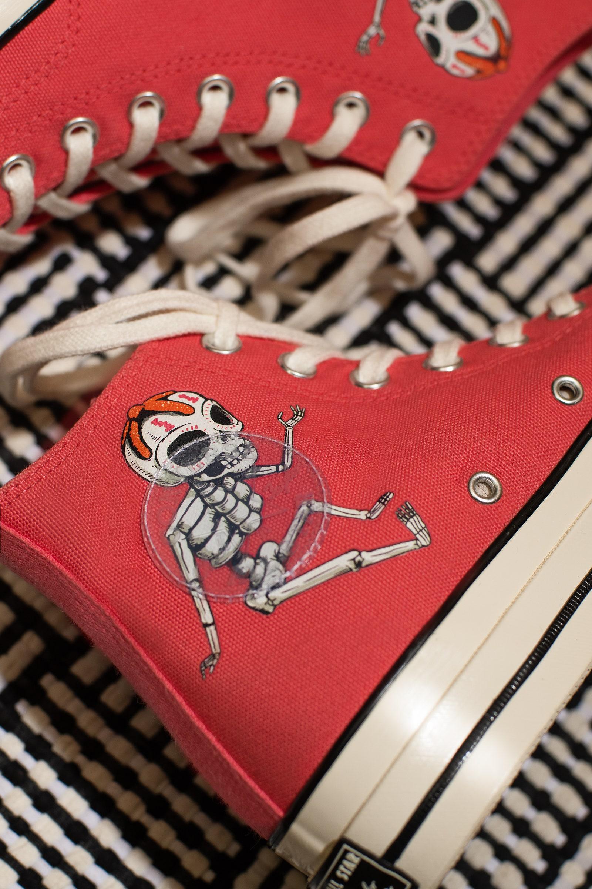
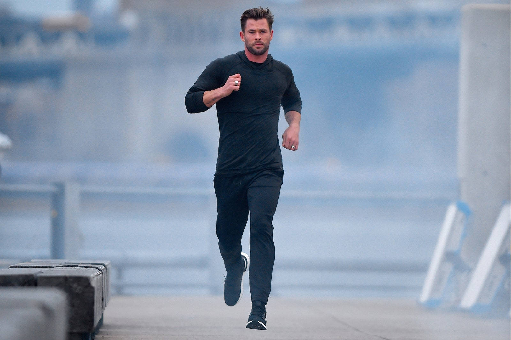

SNEAKERS
24 de octubre de 2021 | Por Sasha Orantes
Zocchi y Hemsworth dejan una cosa muy clara con sus rutinas, cuando se trata de fitness y de obtener buenos resultados, no hay atajos, no hay fórmulas mágicas o workouts que te ayudan a tener brazos enormes en 3 días, debes trabajar duro, ser constante, cuidar tu dieta y realizar cada ejercicio con la forma correcta, y hay unas cuantas cosas que debes tener en cuenta para sacarle más provecho a todo lo que haces.
Y, si lo que quieres es ganar músculo y tener mucha más fuerza, entonces Zocchi es el hombre que debes tener en el radar, para seguir al pie de la letra sus mejores consejos.
Separa los músculos
La ciencia dice que juntar varios músculos en un solo workout es ideal para quemar calorías y aumentar la fuerza en general, pero Zocchi dice que, si quieres masa muscular, también es buena idea entrenar un músculo a la vez, lo que te permite realizar un trabajo más concentrado e intenso en cada zona.
Sus rutinas no suelen superar los 60 minutos (no se trata de agotarse), pero incluyen de 4 a 5 ejercicios por músculo, terminando 4 sets de cada uno donde se incluyen sesiones de pocas repeticiones con sesiones donde pueden llegar hasta las 40 con menos peso.
¿Cómo se dividen los workouts de Hemsworth? Lunes es para pecho, martes para espalda, miércoles para descanso, jueves para pierna, viernes para hombros, sábado para brazos y domingo para descansar de nuevo.
La dieta es importante
Los expertos dicen que la dieta corresponde al 70% de los resultados que logras, así que no se trata solo de tener una rutina extrema con mucho peso y repeticiones, sino de tener también una alimentación balanceada y saludable.
Zocchi suele recomendar el ayuno intermitente, donde comes el desayuno, comida y cena dentro de un período de 8 horas, seguido de un ayuno de 16 horas antes de volver a comer. Además, debes asegurarte de comer todos los nutrientes y calorías que necesitas, ya que eso te va a ayudar a tener suficiente energía y a permitir que los músculos se recuperen y crezcan, y suele suplementar con proteína en polvo a base de plantas.
Busca una rutina sustentable
Hombres como Zac Efron, Kumail Nanjiani y Jason Momoa han hablado sobre lo difícil que es mantener un régimen de entrenamiento extremo, y Zocchi es de los que creen que no debes buscar algo muy extremo que te deje agotado en unos meses o una rutina que no puedas seguir por mucho tiempo.
Es importante que encuentres un plan de entrenamiento que disfrutes y que puedas mantener, sin que este afecte el resto de tus actividades o te deje sin tiempo para ti. Debes pensar en tu bienestar y en realizar rutinas que realmente te gusten, esto es lo que te va a ayudar a mantenerte motivado, y para eso debes incluir elementos para tu cuerpo y mente.
Los ejercicios esenciales
No hay nada de malo en probar cosas nuevas o clases de moda, pero también es importante tener unos cuantos ejercicios esenciales que sabes que funcionan para las metas que quieres conseguir.
Para la parte superior del cuerpo, por ejemplo, Zocchi y Hemsworth agregan curl de predicador, pull de trineo con una cuerda, remos inclinados y shrugs de hombros sentado. Para ganar músculo en general usan el paso del oso, desplantes inversos sit through y curl de martillo. Lo más importante es tener consistencia y realizar los entrenamientos de forma constante y disciplinada.
2do video
Intro
| 15 de agosto de 2021 |
Concepto : Es la intro actual de el canal de Ema "Cultura General" que estará bigente solo por un año. Hay unos tambores de fondo a los cuales los acompañan una guitarra electrica y ya de último se puede escuchar la voz de Aarón (El mejor amigo de Ema) y lo que dice Aarón en la intro es "QUE TE VALGA VERGA MAJE" lo cual motivo a Ema a crear un canal en YouTube y hacer su primer video.
Porque lo motivo : "Porque lo que Aarón dijo fue basicamente como "QUE NO TE IMPORTE LO QUE DIGAN LOS DEMÁS" o "SIMPLEMTE SOLO HAZLO Y ATREVETE" y me pegaron bien profundo esas palabras porque una de las cosas de las cuales la gente se arrepienten en su vida es no averlo intentado, se quedan con el "¿QUE HUBIERA PASADO SI LO INTENTAVA?, ¿ESTARÍA EN EL LUGAR QUE ESTOY AHORA MISMO?, ¿SERÍA FELIZ SI LO HUBIERA INTENTADO?" no quiero arrepentirme de nada, el día de mi muerte sabré porque viví" Dijo Ema al preguntarle por que lo inspirarón esas palabra tan sabias de Aarón.
Ver más3er video
Juego Salvar a mi hermana
| 15 de agosto de 2021 |
Concepto : Es un tutorial acerca de uno de los juegos más famosos y divertidos de juegos diarios el cual es "salvar a mi hermana".
En el video Ema da una clase de tutorial acerca de los comendos del juego y de como salvar a tu hermana, claro si es que te atreves a jugarlo.
Ver más